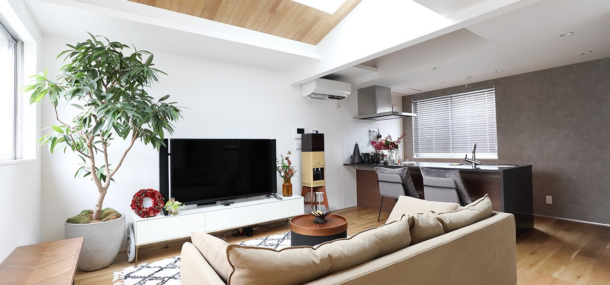
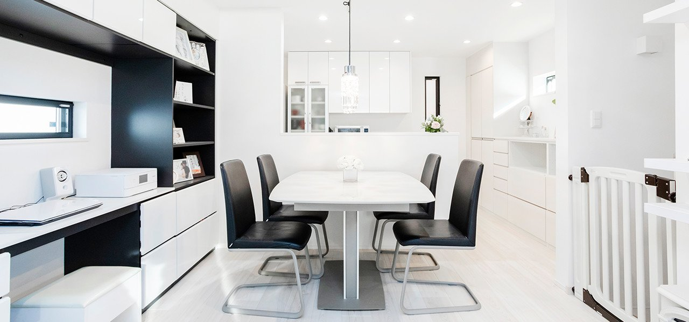
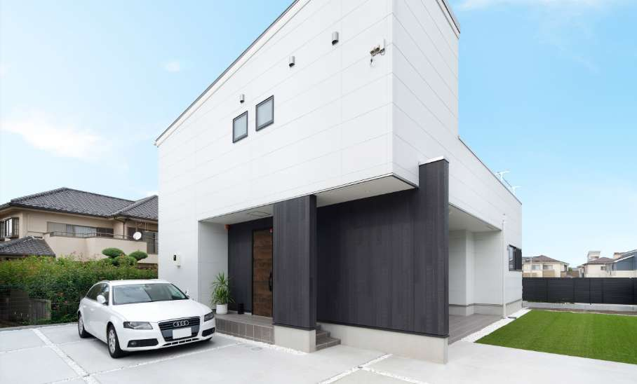
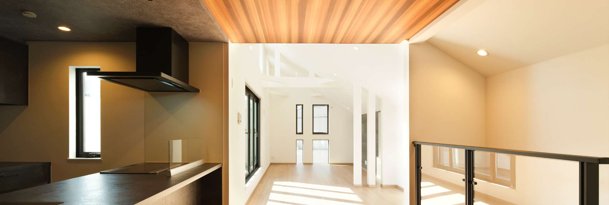
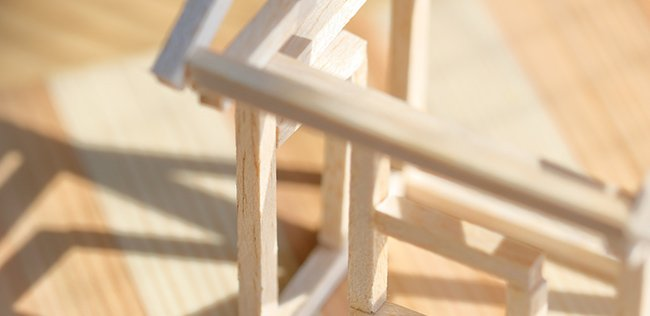
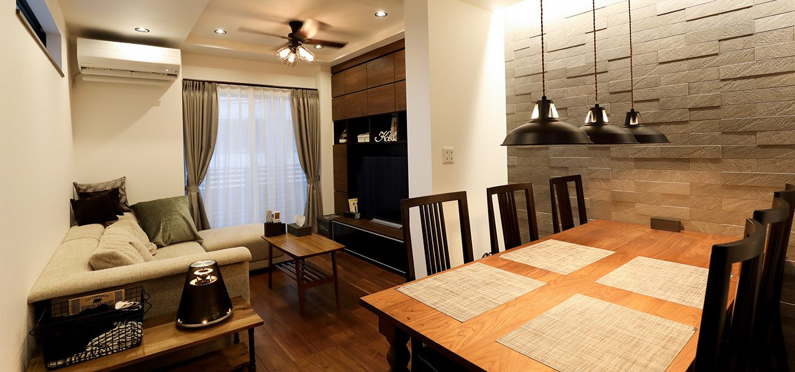
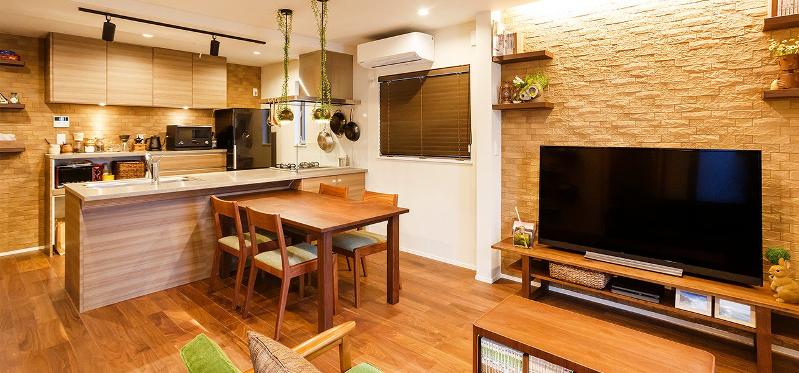
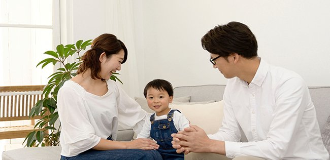

① 会社・基本データ（規模・エリア・対応工法）

オープンハウスは1997年に東京都渋谷区で創業。「東京に、家を持とう。」をスローガンに、都心の狭小地に特化した土地仕入れ力と3階建て設計力で急成長を遂げた不動産総合グループ。持株会社制への移行（2022年）以降、グループ売上高は1兆3,364億円（2025年9月期）に到達。創業27年で首都圏の戸建て着工棟数地域No.1を獲得している。
事業は「不動産仲介」「戸建分譲（ディベロップメント）」「注文住宅（アーキテクト）」「マンション開発」「米国不動産」の5本柱。2023年に三栄建築設計（現メルディア）、2025年にプレサンスコーポレーションを完全子会社化し、都心〜郊外、戸建〜マンションをワンストップで提供できる体制を整えた。
| 項目 | 内容 |
|---|---|
| グループ創業 | 1997年9月（東京都渋谷区にて創業） |
| 事業会社設立 | 2021年4月1日（現・株式会社オープンハウス） |
| 持株会社体制移行 | 2022年1月（純粋持株会社体制へ移行） |
| 創業者 | 荒井正昭 |
| 本社（持株会社） | 東京都千代田区丸の内二丁目7番2号 JPタワー20F・21F |
| 本社（事業会社） | 東京都渋谷区渋谷一丁目13番9号 |
| 代表 | 福岡良介（グループ）／鎌田和彦（株式会社オープンハウス） |
| 資本金 | 202億3,549万円（グループ） |
| 売上高（連結） | 1兆3,364億円（2025年9月期）／2026年9月期予想: 1兆4,850億円（前期比+11.1%） |
| 営業利益 | 1,459億円（2025年9月期） |
| 従業員数 | 連結6,620名（2025年9月末時点） |
| 戸建関連契約件数 | 3,878件（2025年9月期、単体）／アーキテクト施工棟数 約5,000棟（2025年時点） |
| 上場 | 東証プライム（3288） |
| 対応エリア | 東京・神奈川・埼玉・千葉・群馬・愛知（名古屋）・兵庫（神戸）・大阪・福岡 |
オープンハウスの本質的な強み
単なる「建売業者」でも「注文住宅メーカー」でもない。土地仕入れ・設計・施工・仲介・住宅ローンまで全てグループ内で完結する垂直統合モデルが他社との決定的な違い。他社が敬遠する三角地・旗竿地・狭小地を安く仕入れ、3階建てで延床を確保する独自ノウハウを持つ。結果として「都心に戸建て」という一見ぜいたくなコンセプトを、マンション並みの予算で実現できている。
グループ会社と事業構造
| 会社名 | 事業内容 |
|---|---|
| 株式会社オープンハウス | 不動産仲介・戸建分譲・マンション開発 |
| オープンハウス・ディベロップメント | 土地企画開発・建売住宅・セミオーダー住宅 |
| オープンハウス・アーキテクト | フルオーダー注文住宅の設計・施工 |
| アイビーネット | 不動産金融（住宅ローン取次） |
| メルディア（旧三栄建築設計） | 戸建分譲・注文住宅（2023年子会社化） |
| プレサンスコーポレーション | マンション供給（2025年完全子会社化） |
売上高の推移
| 年度（9月期） | 売上高 | 備考 |
|---|---|---|
| 2019年 | 5,000億円 | — |
| 2021年 | 8,105億円 | — |
| 2022年 | 9,526億円 | — |
| 2023年 | 1兆1,484億円 | 初の1兆円突破 |
| 2024年 | 1兆2,958億円 | — |
| 2025年 | 1兆3,364億円 | — |
| 2026年（予想） | 1兆4,850億円 | 前期比+11.1% |
沿革のポイント
- 1997年：センチュリー21フランチャイズとして不動産仲介業で創業
- 2001年：新築戸建て販売を開始（オープンハウス・ディベロップメント）
- 2010年：米国不動産事業参入（カリフォルニア・上海子会社設立）
- 2012年：センチュリー21との契約解消、自社ブランド「東京に、家を持とう。」CM開始
- 2013年：東証一部上場（2022年にプライム市場移行）
- 2016年：米国テキサス進出
- 2018年：米国ハワイ進出
- 2021年1月：プレサンスコーポレーションを連結子会社化
- 2022年1月：純粋持株会社体制へ移行（株式会社オープンハウスグループ）
- 2023年：売上高1兆円達成。三栄建築設計（現・メルディア）を11月に完全子会社化
- 2024年3月：三栄建築設計が「株式会社メルディア」へ社名変更
- 2025年4月：プレサンスコーポレーションを完全子会社化
顧客満足度データ（2026年）
| カテゴリ | 順位 | スコア |
|---|---|---|
| オリコン 注文住宅 3階建て以上（アーキテクト） | 8位 | 68.0点 |
| オリコン 建売住宅 首都圏（ディベロップメント） | 10位 | 63.8点 |
| オリコン 建売住宅 全国（ディベロップメント） | ランクイン | 64.3点 |
② 商品ラインナップと価格
オープンハウスの商品は「ディベロップメント（建売・セミオーダー）」と「アーキテクト（フルオーダー注文）」の2ラインに分かれる。同じ「オープンハウス」の看板でも、扱う商品・価格・保証期間が大きく異なるため、自分が何を買おうとしているかを必ず確認したい。
商品ラインナップ一覧



大手HMとの坪単価比較
| ハウスメーカー | 坪単価目安 |
|---|---|
| オープンハウス | 42〜70万円 |
| タマホーム | 50〜80万円 |
| 一条工務店 | 80〜105万円 |
| 住友林業 | 80〜130万円 |
| 積水ハウス | 85〜120万円 |
| ヘーベルハウス | 90〜120万円 |
建売と注文住宅の選び方
| 比較軸 | 建売（ディベロップメント） | 注文住宅（アーキテクト） |
|---|---|---|
| 設計自由度 | △（完成済みから選ぶ） | ◎（完全自由設計） |
| 価格 | ◎（最もリーズナブル） | ○（オプションで変動） |
| 入居スピード | ◎（即入居可） | △（設計〜施工に数ヶ月） |
| 延長保証 | 10年（標準） | 最長20年「あんしん20」 |
| 土地込み | ◎（土地＋建物セット） | 土地は別途（仲介対応） |
オープンハウスの最大の強みは「都心の土地＋建物」のセット販売。土地探しに苦戦している方には、建売・セミオーダーが最もメリットを感じやすい。注文住宅を検討するなら、アーキテクトで耐震等級3・ZEH断熱の性能オプションを追加することを推奨。
③ 構造・耐震性能

木造軸組在来工法が標準
オープンハウスは日本の伝統的な木造軸組在来工法を採用。柱と梁で建物を支え、筋交いと耐力壁で地震・台風に耐える構造。
| 項目 | 詳細 |
|---|---|
| 工法 | 木造軸組在来工法 |
| 構造材 | プレカット工場でミリ単位の精度で加工 |
| 剛床 | 24mm厚以上の構造用合板を土台・梁と一体化 |
| 耐力壁 | 面材耐力壁「novopanSTP II」を外周全体に配置 |
| 構造金物 | ホールダウン金物で柱の引き抜きを防止 |
| 耐震等級（標準） | 等級1（建築基準法レベル） |
| 耐震等級（オプション） | 最大 等級3まで対応可（アーキテクト） |
基礎と地盤保証
| 項目 | 詳細 |
|---|---|
| 基礎方式 | フルベースベタ基礎 |
| 地盤調査 | 全棟で実施。必要に応じて地盤改良工事 |
| 地盤保証 | 最高5,000万円・最長20年間（第三者機関判定） |
| 3階建て | 全棟で構造計算を実施（法的義務） |
| 2階建て | 壁量計算で設計（構造計算はオプション） |
| 制震装置 | 注文住宅のオプション。都心密集地で有効 |
他社との耐震性比較
| ハウスメーカー | オープンハウス | 標準耐震等級 | 備考 |
|---|---|---|---|
| 標準仕様 | 等級1 | — | オプションで等級3対応可 |
| 一条工務店 | — | 等級3 | 全棟標準 |
| 住友林業 | — | 等級3 | BF構法で標準 |
| 積水ハウス | — | 等級3相当 | 独自基準 |
| タマホーム | — | 等級3 | 標準対応 |
| ヘーベルハウス | — | 等級3 | 鉄骨構造 |
オープンハウスの標準仕様は耐震等級1。建築基準法の最低ラインであり、他の大手HMが等級3を標準にしているのと比べると見劣りする。ただしアーキテクトの注文住宅では等級3まで上げられるため、検討者は契約前に必ず「等級3への追加費用」を確認すること。
④ 断熱性能
断熱性能は正直に言ってオープンハウスの弱点。標準仕様は省エネ基準（等級4）ギリギリで、大手HMの中では最も低い水準。ただしアーキテクトで樹脂窓＋断熱強化オプションを追加すればZEH基準まで引き上げ可能。
標準仕様のUA値
| 項目 | 内容 |
|---|---|
| 断熱材 | 高性能グラスウール |
| 断熱等級（標準） | 等級4相当 |
| UA値（標準） | 0.87 W/m²K以下（省エネ基準クリア） |
| 窓（標準） | アルミ樹脂複合サッシ＋ペアガラス |
アーキテクトのオプション強化
| オプション | 効果 |
|---|---|
| 樹脂窓（APW330等） | UA値0.5〜0.6まで向上。ZEH基準・HEAT20 G1対応 |
| 断熱材グレードアップ | 壁・天井・床の断熱厚増加で等級5〜6対応 |
| 基礎断熱工法 | 床下温度の安定化。蓄熱式床暖房と相性良好 |
他社との断熱性能比較
| ハウスメーカー | オープンハウス | UA値 | 断熱等級 |
|---|---|---|---|
| 一条工務店（i-smart） | — | 0.25 | 等級7 |
| スウェーデンハウス | — | 0.38 | 等級6 |
| 住友林業 | — | 0.46 | 等級5 |
| タマホーム | — | 0.55〜0.60 | 等級4〜5 |
| OH 標準 | 0.87 | 0.87 | 等級4 |
| OH オプション | 0.5前後 | 0.5 | 等級5 |
断熱性能は標準のままだと他社に見劣りするが、「都心の土地＋建物」の総額で見れば、オプションで断熱を上げても他社より安く収まるケースが多い。断熱重視なら必ずアーキテクトで樹脂窓＋断熱強化を追加すること。
⑤ 気密性能
C値はディベロップメント（建売）では非公表。アーキテクトの注文住宅であればC値1.0台の建物が多数あり、最高実績はC値0.33まで出ている。ただし全棟での気密測定は実施しておらず、希望者のみの対応。
気密性能の位置づけ
| 項目 | 数値 |
|---|---|
| 標準（ディベロップメント） | 非公表 |
| アーキテクト実績 | C値1.0台の建物が多数 |
| アーキテクト最高実績 | C値0.33 |
| 大手HM標準の目安 | 2.0前後 |
| 全棟気密測定 | 実施せず（希望者対応） |
他社との気密性能比較
| ハウスメーカー | オープンハウス | C値（公表） | 全棟測定 |
|---|---|---|---|
| 一条工務店 | — | 0.59（全棟平均） | 全棟実施 |
| OH アーキテクト | 1.0台（実績） | 1.0台 | 希望者のみ |
| 住友林業 | — | 非公表 | 希望者のみ |
| 積水ハウス | — | 非公表 | 実施せず |
| タマホーム | — | 非公表 | 実施せず |
気密性を重視するなら、契約前に「気密測定の実施」と「目標C値」を営業担当と合意しておくこと。アーキテクトなら依頼すればC値1.0以下も実現可能。
⑥ 換気・空調
24時間換気システム（標準）
| 項目 | 詳細 |
|---|---|
| 方式 | 第三種換気（排気: 機械 / 給気: 自然） |
| 特徴 | きれいな外気を取り込み、室内の汚れた空気を排出 |
| フィルター | チリ・ホコリをカットするフィルター装備 |
| シックハウス対策 | F☆☆☆☆建材を全面採用 |
オプション
| オプション | 詳細 |
|---|---|
| 第一種換気（熱交換型） | アーキテクトで対応可能。冷暖房効率を大幅向上 |
| 蓄熱式床暖房 | 基礎断熱と組み合わせ足元から暖める |
標準は最低限の第三種換気。断熱をオプションで強化するなら、換気も第一種熱交換型にグレードアップすることで冷暖房効率が劇的に改善する。
⑦ デザイン

デザイナーズ住宅の内装（アーキテクト）

ディベロップメント建売住宅
外壁・内装の標準仕様
| 項目 | 標準仕様 |
|---|---|
| 外壁 | ニチハ窯業系サイディング（モエンエクセラード16 / Vシリーズ等） |
| キッチン | パナソニック「ラクシーナ」or クリナップ「ステディア」（深型食洗機対応） |
| バスルーム | LIXIL「リデア」or TOTO「サザナ」 |
| トイレ | LIXIL「ベーシア」（温水洗浄便座標準） |
| 洗面台 | パナソニック「シーライン」or LIXIL「MV」 |
| 壁紙 | 標準グレードの量産クロス（仕様は時期・物件により異なる） |
| 床材 | 標準グレードのフロア材（仕様は時期・物件により異なる） |
| 玄関ドア | ディンプルキー採用（ピッキング困難）＋ダブルロック |
| 窓 | 全窓ダブルロック。録画機能付きインターホン標準 |
標準仕様は時期・物件により変更される可能性があります。契約時には最新の公式カタログ・ショールームで必ずご確認ください（2026年4月時点の情報）。
デザインの特徴
- 都心の3階建て: オープンハウスの代名詞。狭小地で3フロアを使い切る縦型の空間設計
- 建売のデザイン: シンプル・モダンな外観が基本。街並みに馴染む落ち着いたトーン
- 注文住宅のデザイン: 完全自由設計のため、施主の好みに応じた幅広いデザインに対応
- ビルトインガレージ: 1階ガレージ＋2階リビングの構成が得意
- ルーフバルコニー: 屋上でアウトドア空間を確保
オープンハウスの「個性」を出す3つのポイント:
- アーキテクトで完全自由設計 — 外壁タイル・塗り壁・金属系まで選択可
- 都心狭小3階建ての設計力 — 吹き抜け・スキップフロアで開放感を作る
- 高性能オプション追加 — 樹脂窓・耐震等級3・制震装置で弱点を補う
⑧ 保証・メンテナンス
保証体系
| 内容 | 期間 | 条件 |
|---|---|---|
| 構造耐力上主要な部分 | 10年（標準） | 住宅品質確保法に基づく瑕疵保証 |
| 雨水の侵入を防止する部分 | 10年（標準） | 同上 |
| 住宅延長保証「あんしん20」 | 最長20年 | アーキテクトのオプション。10年目の建物診断＋修繕が条件 |
| 設備延長保証 | 最長10年 | 給湯器・キッチン・バス等を1〜2年→10年に延長 |
| 地盤保証 | 最長20年 | 最高5,000万円・第三者機関判定 |
アフターサービス体制
| 項目 | 詳細 |
|---|---|
| 受付 | 24時間365日受付（夜間は翌日以降対応） |
| サポート満足度 | 99%（アーキテクト公表値） |
| オーナーズクラブ | WEBコンシェルジュで修理・部品手配 |
| 駆けつけサービス | トラブル時にサービススタッフ派遣 |
他社との保証期間比較
| ハウスメーカー | オープンハウス | 初期保証 | 最大延長 |
|---|---|---|---|
| 標準仕様 | 10年 | 10年 | 20年（あんしん20） |
| 一条工務店 | — | 30年 | 30年 |
| 住友林業 | — | 30年 | 60年 |
| 積水ハウス | — | 30年 | 永年 |
| ヘーベルハウス | — | 30年 | 60年 |
| タマホーム | — | 10年 | 60年 |
オープンハウスの標準保証10年は、大手HMの30年と比べると短い。延長保証「あんしん20」はアーキテクトの注文住宅限定のオプションである点に注意。長期保証を重視するなら住友林業・積水ハウスとの比較が必要。
⑨ 「都心の土地＋建物セット販売」徹底解説
オープンハウスの最大の強みは「都心に戸建てを持てる」というコンセプト。土地の仕入れから建物の設計・施工・販売・ローンまでを一貫して自社グループで完結させる。
オープンハウスのビジネスモデル
| 項目 | オープンハウス | 一般的なHM |
|---|---|---|
| 土地 | グループが仕入れ済の土地を提案 | 施主が自分で探す |
| 建物 | グループが設計・施工 | HMが設計・施工 |
| 仲介 | グループ内で仲介も対応 | 外部の不動産会社 |
| ローン | アイビーネット（グループ会社） | 外部の金融機関 |
| ワンストップ | 全てグループ内で完結 | 複数業者をまたぐ |
土地仕入れ力の秘密
| ポイント | 詳細 |
|---|---|
| 不整形地の活用 | 三角地・旗竿地・線路沿い・傾斜地など、他社が敬遠する土地を安価に仕入れ |
| 狭小地の活用 | 15〜20坪の土地でも3階建てで十分な延床を確保 |
| 情報ネットワーク | 不動産業者への日常的な訪問で、市場公開前の情報をキャッチ |
| 仕入れスピード | 土地が出たら即断即決。資金力を背景にしたスピード仕入れ |
| 設計ノウハウ | 変形地・狭小地で最適な間取りを導き出す長年の設計蓄積 |
価格面のメリット
| 比較 | オープンハウス | 一般的な都心購入 |
|---|---|---|
| 土地30坪＋建物 | — | 8,000〜1億円超 |
| 土地15坪＋3階建て | 5,000〜7,000万円台も可能 | — |
| 土地代の節約 | 狭小地・不整形地で30〜50%安い土地を活用 | — |
エリア展開（2024年度・着工棟数No.1実績）
| エリア | No.1取得地域 |
|---|---|
| 東京都（12区市） | 渋谷・新宿・品川・墨田・江戸川・杉並・西東京・三鷹・調布・狛江・日野・国立 |
| 神奈川県 | 横浜・川崎含む県全体 |
| 埼玉県 | さいたま市 |
| 愛知県 | 名古屋市全16区・長久手市 |
| 兵庫県 | 神戸市・尼崎市 |
| 大阪府 | 堺市・豊中市 |
| 福岡県 | 福岡市博多区 |
セット販売の注意点
- 変形地・狭小地は安い反面、日当たり・通風に課題がある場合がある
- 建売は標準仕様のため、こだわり派は注文住宅を検討すべき
- 線路沿い・幹線道路近くは騒音・振動を事前に現地確認
- 狭小地・不整形地は将来のリセールで買い手が限定される可能性
⑩ 客層・向き不向き

典型的な購入者プロファイル
| 属性 | 傾向 |
|---|---|
| 年齢 | 30〜40代が中心 |
| 世帯構成 | 共働きファミリー・子育て世代（通勤利便性重視） |
| 世帯年収 | 500〜800万円がボリュームゾーン |
| 最低年収目安 | 世帯年収400万円〜（建売の場合） |
| 価値観 | 「どこに住むか」を最重視。立地＞性能＞デザイン |
| 情報収集 | SUUMO・HOME'Sから物件検索→来場 |
オープンハウスを選ぶ理由TOP3
- 都心の好立地に手が届く価格（土地＋建物セットのコスパ）
- 土地探しから建物まで一括対応の安心感（ワンストップ）
- スピーディな対応（土地が出たら即提案、建売なら即入居可能）
向き不向き
✅ 向いている人
- 都心（東京23区・横浜・川崎・名古屋・神戸）に戸建てを持ちたい
- 土地探しに苦戦していて、土地＋建物セットが欲しい
- マンションと同額で戸建てを検討している
- 通勤30分以内・駅徒歩10分以内を死守したい
- 総額と立地のバランスで合理的に判断する
✕ 向かない人
- 断熱・気密・耐震性能を最重視したい
- 無垢材・自然素材のデザインを求める
- 30年以上の長期保証が必須
- 郊外の広い土地にゆったり建てたい
- 営業のペースに巻き込まれず、じっくり検討したい
⑪ 他社との比較表
| 比較 | オープンハウス | 一条工務店 | 住友林業 | 積水ハウス | タマホーム | ヘーベル |
|---|---|---|---|---|---|---|
| 坪単価 | 42〜70万 | 80〜105万 | 80〜130万 | 85〜120万 | 50〜80万 | 90〜120万 |
| UA値 | 0.87（標準） | 0.25 | 0.46 | 0.46〜0.60 | 0.55 | 0.55〜0.60 |
| C値 | 1.0台（実績） | 0.59（全棟） | 非公表 | 非公表 | 非公表 | 非公表 |
| 構造 | 木造軸組 | 木造2×6 | 木造BF | 鉄骨/木造 | 木造軸組 | 鉄骨ALC |
| 耐震等級 | 1（標準） | 3（標準） | 3（標準） | 3相当 | 3（標準） | 3（標準） |
| 設計自由度 | ◎注/△建 | △ | ◎ | ◎ | ○ | ○ |
| 保証(初期) | 10年 | 30年 | 30年 | 30年 | 10年 | 30年 |
| 保証(最大) | 20年 | 30年 | 60年 | 永年 | 60年 | 60年 |
| 土地仕入れ力 | ◎ | × | × | × | × | × |
| 都心3階建て | ◎ | × | ○ | ○ | △ | ◎ |
| 向く人 | 立地重視 | 性能最優先 | 木×デザイン | 長期安心 | 予算重視 | 耐火・耐久 |
オープンハウスの独自性は「土地＋建物」のワンストップ。性能では大手HMに劣るが、「都心の戸建て」という独自の切り口では他社が真似できない領域。逆に「性能で数字が出ている家」を求めるなら一条工務店、「長期保証とブランド」なら住友林業・積水ハウスが候補になる。
⑫ よくある後悔・失敗事例
後悔①：営業の押しが強く、冷静に判断できなかった
「今日決めないとこの物件は他の人に取られます」と急かされた／夜遅い時間や休日の電話、アポなし訪問が続いた／契約後に対応が変わったと感じる声。
→ 対策: 複数のHMと並行検討していることを伝え、即決を避ける。「家に帰って検討します」を貫く。
後悔②：標準仕様の性能が低かった
耐震等級1が標準で不安／断熱性能が低く、冬場の結露や寒さが気になった／「もっと性能面をオプションで上げておけばよかった」。
→ 対策: 契約前に耐震等級3・断熱強化のオプション費用を確認し、総額に組み込む。
後悔③：日当たり・通風に問題があった
狭小地のため隣家との距離が近く、1階の日当たりが悪い／3階建ての1階は暗くなりがちで、冬場は特に日が入らない／窓の配置に不満。
→ 対策: 物件の現地確認は必ず朝・昼・夕の3回。隣地の建物高さと日影の影響も確認。
後悔④：施工品質にバラつきがあった
施工監督の経験不足／基礎・断熱・配管の見えない部分の不備が後から発覚／スピード優先で仕上がりが雑な箇所。
→ 対策: 第三者のホームインスペクション（5〜10万円）を入れることを強く推奨。
後悔⑤：アフターサービスの対応が遅い
不具合報告しても修理対応が遅い／担当者が変わり引継ぎ不十分／建売の仕上げ修正依頼が進まない。
→ 対策: 引渡し前の施主検査を徹底。不具合は写真付きで記録を残す。
後悔⑥：オプション費用が想定以上に膨らんだ
標準仕様だと物足りずオプションを積み上げた結果、予算を大幅超過。耐震等級3・断熱強化・制震装置・キッチングレードアップで数百万円に。
→ 対策: 最初から「オプション込みの総額」で予算を組む。標準仕様の含有範囲を事前確認。
後悔⑦：狭小地の3階建ては老後が不安
3フロアの上り下りが年齢とともに負担／将来のバリアフリー化が困難／エレベーター設置は構造上難しい。
→ 対策: 1階に寝室・水回りを配置する間取りを検討。将来の生活動線を設計段階で考慮。
後悔⑧：リセールバリューが不安
狭小地・不整形地は将来の売却時に買い手が限定／同じ条件の物件が多く差別化しにくい。
→ 対策: 駅近・好立地を選ぶことでリセールリスクを軽減。徒歩10分以内を死守。
⑬ まとめ
- 都心の土地＋建物をセットで提案できる圧倒的な土地仕入れ力
- 首都圏12区市でNo.1の着工棟数実績
- 狭小地3階建ての設計力（15〜20坪でも延床確保）
- 土地・建物・ローンまでグループ内ワンストップ
- グループ売上1兆3,000億円超の安定経営基盤
- 建売なら2〜4ヶ月で入居可能なスピード感
- 標準仕様の耐震等級1・断熱等級4で、大手HMに比べ性能面で見劣り
- 初期保証10年で、30年保証の大手HMと比較すると短い
- 営業スタイルが強引と感じるケースあり
- オプション追加で総額が膨らみやすい
こんな人に強くお勧め
「都心に戸建てを持ちたいが土地が高くて手が届かない」「マンションと同額で戸建てを」「通勤利便性を最優先」という立地重視派には、大手HMにはない独自の選択肢。ただし性能面のオプションは必ず積み増すことを前提に検討すべき。